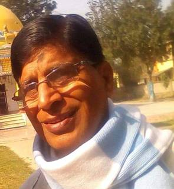

(मैथिलीमे ग्रामगाथा विधाकेँ नव जीवन देनिहार, पाठकीय विधाक अगुआ। संपर्क-9430743070)
डा.रमानन्द झा 'रमण' जीक बीज-भाषण
साहित्य मात्र सर्जनात्मक प्रतिफल नहि, जीवनक गतिकेँ संवेदनाक संग आत्मसात करबाक संस्कार थिक। मानव प्राणीमे एहि संस्कारक बीजारोपण गर्भहिमे भs जाइछ। जेना-जेना ज्ञानक वृद्धि होइत अछि, तेना-तेना ओकर भीतर प्रवेश करैत अछि आ ओ संस्कार आ मेहनतक बलपर ओहि बीजकेँ पनयबामे प्राणपनसँ लागि जाइत अछि आ कियो खूब झमटगर अनेक डारि-पातक संग विशाल बटवृक्ष जकाँ अपन सर्जनात्मक साधनाक दीप्तिसँ साहित्य जगतकेँ आलोकित करैत अछि, तँ कियो नारिकेरक गाछ जकाँ बिना डारिक सोझ बढ़ैत जाइत अछि आ अन्तमे मेघडम्बर जकाँ रौद आ पानिसँ बचबैत विलक्षण सुस्वाद जंल आ पौष्टिक फल जकाँ साहित्यानुरागीक मनकेँ तृप्त करैत अछि। कियो बाधक हरियर कंचन झुमैत धान-गहूम आदि फसिलक मनमोहक वातावरण जकाँ साहित्यकेँ पुष्पित-फलित कs समाजक वातावरणकेँ साहित्यमय बनयबामे अपन योगदान दैत अछि, कियो साहित्यकारक अवदानक विस्तृत मीमांसा कs समाजक मध्य सहज आ सुगम रूपसँ परिचय करयबामे सहायक सिद्ध होइत छथि, तँ कियो आलोचना-समालोचना क' ओहि कृतिकेँ गुणावगुणक आधारपर शिक्षार्थी-शोधार्थीकक लेल ज्ञानक प्रकाश प्रदान करैत छथि। किनकोमे संगठनात्मक क्षमता भरल-पुरल रहैत छनि जे साहित्यिक विकासमे प्रतिनिधिक निधिक रूपमे कार्य करैत छथि।
साहित्यकारक काज साहित्य सृजन छनि आ ओहि साहित्यकेँ आगाँक पीढ़ी तक पहुँचयबाक काज व्यक्ति, संस्था आ संस्थानक होइत अछि। एही माध्यमसँ कालजयी साहित्य ओहि भाषा-साहित्यक प्राणवायु होइत अछि आ साहित्यकार अमर। एकर अनेक माध्यम भ' सकैत अछि आ अछियो, गैर-सरकारी आ सरकारी दुनू।
मैथिली साहित्यमे ज्योतिरीश्वरसँ लs वर्तमान धरि अनेक साहित्यिक कृति अछि आ कृतिकार छथि, जनिक रचना संसार एतेक समृद्ध विविध आयामक संग छनि, जे एक व्यक्ति द्वारा विश्लेषण करब ओतेक सरल नहि, तेँ समय-समयपर ओहेन कृति आ कृतिकारक विषयमे जनबाक लेल विशिष्ट विद्वानलोकनिकेँ आमन्त्रित कैल जाइत छनि, जेना पूर्वमे कहलहुँ व्यक्ति, संस्था अथवा संस्थानक द्वारा आ एक दिना-दूदिना...कोनो व्यक्ति विशेष विद्वान/साहित्यमूर्तिक हुनक अवदानक विभिन्न आयामकेँ समेटैत चर्चा-परिचर्चा जे होइछ ओहिमे कोनो एक विद्वान द्वारा विषय निरूपण 'बीज-भाषण'क रूपमे,जेकरा बीज-वक्तव्य सेहो कहल जाइत अछि जे मुख्य प्रारम्भिक उद्बोधन अछि जे सम्पूर्ण आयोजनक वैचारिक दिशा, मूल विषय आओर दृष्टिकेँ फरिछा, पूरा कार्यक्रमक रूपरेखाक विषय प्रवेश, दिशा-निर्देशन आ बौद्धिक प्रेरणा दैत अछि, जँ एकरा दोसर शब्दमे जँ कही तँ ' सिनॉप्सिस' रूपमे प्रस्तुत करैत अछि।
डा.रमानन्द झा 'रमण' मैथिलीक आलोचना विधाक पूर्ण परिचित आ चर्चित नाम अछि।अनुसन्धानक प्रतिमानक रूपमे सेहो ख्यात छथि। गड़ल वस्तुकेँ उखारि प्रकाशमे आनब, ओहिमे सेहो सिद्धहस्त छथि। हिनक सम्पादनमे अनेक पोथी प्रकाशित अछि। निबन्ध आ आलोचनाक मूल पोथी एक दर्जनसँ अधिक अछि। इतिहासमे तँ सहजहि, वर्तमानमे सेहो मैथिली साहित्यक पूर्ण गतिविधिपर नजरि रखनिहार छथि। समग्रतामे जँ कही तँ पुरानसँ लs अद्यतन साहित्यक अध्येता छथि।
साहित्य अकादेमी कोनो संस्थाक संग संयुक्त रूपसँ साहित्यकारलोकनिक जन्मशतवार्षिकी अथवा आनो कोनो अवसरपर हुनक व्यक्तित्व आ कृतित्वपर संगोष्ठी आयोजित करैत अछि, जाहिमे बीज-भाषण कर्ताक प्रयोजन पड़ैत छैक आ स्वाभाविक अछि ओहिमे डा.रमानन्द झा 'रमण'क नाम कतिआएल नहि जा सकैछ। 2009सँ अद्यावधि अनेक साहित्यकार नाम आयोजित संगोष्ठीमे बीज-भाषण देबाक लेल बजाओल गेल छथि। ओहिमे पठित आलेख संस्थान तँ प्रकाशित करिते अछि, मुदा डा.रमानन्द झा 'रमण' पाठकक सुविधाक लेल एक ठाम संकलित कs 2022मे 'बीज-भाषण'क नामसँ अखियासल प्रकाशन,लालगंजसँ पोथी प्रकाशित कयलनि अछि आ एकर अतिरिक्त "राष्ट्रीय अनुवाद मिशन, भारतीय भाषा संस्थान, मैसूर एवं महाराज लक्ष्मीश्वर सिंह कॉलेज सरिसब-पाही द्वारा आयोजित ' ज्ञानाधारित पाठक अनुवादक पुनश्चर्या तथा एक आर संगोष्ठीमे पठित 'ज्ञानाधारित पाठक मैथिलीमे अनुवादक इतिहास' विषयपर आलेख अछि। साहित्य अकादेमी द्वारा आयोजित जे 2022क बादक अछि ओहिमे हमरा लग दू गोष्ठीक आलेख अछि, एक प्रो.मुक्तिनाथ मिश्र आ दोसर डा. जयमन्त मिश्रक। एकर अतिरिक्त जँ कतौ पढ़ने होथि, तँ हमरा लग ओकर जानकारी नहि अछि।
'बीज-भाषण'मे जाहि साहित्यकारक विषयमे पुस्तकमे संकलित अछि, ओ छथि भुवनेश्वर सिंह ' भुवन', लक्ष्मीपति सिंह, ईशनाथ झा, तन्त्रनाथ झा, सुभद्र झा, जीबछ मिश्र, राघवाचार्य, बाबू कृष्णनन्दन सिंह, गोविन्द झा आ जे नहि संकलित अछि ओ छथि मुक्तिनाथ झा एवं जयमन्त मिश्र। कुल व्यक्तिपरक आलेख अछि एगारह साहित्यकारक एवं तीन विषय आधारित।
भुवनेश्वर सिंह 'भुवन' अल्पायु भेलाह, मात्र सैंतीस वर्षक जिनगी रहलनि, मुदा राजपरिवारक रहितो साहित्यमे विद्रोही तेवर शोषित-प्रताड़ित, भूखल-नाड•ट, वर्गक पीड़ाकेँ अनुभव कयलनि आ अपन सृजनात्मक क्षमतासँ सभक ध्यान अपना दिस आकृष्ट कयलनि। " 'रमण'जी लिखैत छथि- रमानाथ झा युग- स्रस्टा कहल। यात्रीजीक अनुसारेँ जखन प्राचीन परिपाटीक शब्द-शिल्प नवीन भावनाक अभिव्यक्ति करबाक समय नड•राय लागल तँ भुवनजी शिल्प-विधानक तत्त्व चिन्तन- दुनू दृष्टिसँ मैथिली कवितामे नवीनता आनल।" गद्य-पद्य-अनुवाद तीनू विधामे हिनक कलम चललनि आ मैथिली साहित्यक भण्डार भरलनि।
लक्ष्मीपति सिंहक बाल्यपन अत्यन्त दुखद रहलनि, बाल्यावस्थहिमे हिनक पिताक निधन भेल रहनि, आर्थिंक परेशानी भेलनि, जीवनयापनमे जखन कष्ट भेलनि तँ दरभंगा महाराजक प्रेस "न्यूज़ पेपर्स एंड पब्लिकेशन्स प्रा. लि., पटनामे कार्यरत भेलाह आ ओतहिसँ सेवानिवृत्त भेलाह।
हिनक अवदान साहित्यिक एवं सामाजिक दुनू क्षेत्रमे अछि। सामाजिक क्षेत्रमे " स्थानीय सरकारी चिकित्सालयक वाइस चेयरमैन, प्राथमिक शिक्षक संघक सभापति, थाना प्रान्तीय निरक्षरता निवारण समितिक सभापति, एंग्लो संस्कृत विद्यालयक संचालक एवं प्रधानाचार्य आदि"।" (पृष्ठ-17) साहित्यिक क्षेत्रमे प्रकाशित सम्पादनक अतिरिक्त उपन्यास-चामुण्डा(1933-34), पंचवटी(1978) , संस्मरण-अतीतक स्मृति पटल,।" (पृष्ठ-17) हिनक असंकलित आलेखक सेहो चर्च छनि, सूचना छनि।
"संगीत शास्त्रक ज्ञाता ईशनाथ झाक शब्द-शब्द संगीतमय छनि।"(पृष्ठ-19) रमणजी लिखैत छथि -" ईशनाथ झा जेना वास्तविक जीवनमे भाग्यवान छलाह, ओहिना साहित्यक संकलन, प्रकाशन एवं संरक्षणक क्षेत्रमे सेहो भाग्यवान छथि।" (पृष्ठ-19) कवि, नाटककार, अनुवादकक रूपमे ख्यात छथि। हिनक प्रकाशित कृतिक विषयमे छनि।
तीनू एकतुरिया छलाह आ संयोगसँ एक्कहि सङ्ग एक्कहि संगोष्ठीमे तीनू साहित्यकारक विषयमे हिनकहि बीज-भाषण देबाक छलनि, तेँ तीनूक तुलनात्मक अध्ययन( व्यक्ति एवं कृति) बहुत विस्तारसँ छनि आ सूचनात्मक छनि। प्रस्तावनामे लिखने छथि -" एक टा विद्वान श्रोता टीपलनि, बीज नहि, गाछ भाषण छल" (पृष्ठ-7)
तन्त्रनाथ झा आ डा. सुभद्र झाक विचारधारा भिन्न रहितो दुनू एक-दोसरक पूरक कोना छलाह, दुनूक साहित्यमे अवदान आ विश्वविद्यालयमे मैथिलीक मान्यताक लेल कतेक कोन-कोन यत्न केलनि आ हुनक प्रयत्नसँ कोना सफलता भेटलनि, बीज-भाषणमे सभक संक्षिप्त indication अछि। ओकर विस्तारमे हम नहि जा मित्रता आ स्वभावक जे रमणजी लिखलनि अछि, डा. सुभद्र झाक निम्नलिखित पाँती ' हम आगि आ हमरा प्रज्वलित कएनिहार तंत्रनाथ बसात"केँ स्मरण करैत -" से केहेन सुखद संयोग अछि जे मैथिली भाषा-साहित्यक 'आगि' एवं 'बसात'क जे एक दोसराक पूरक थिक, जन्मशतवार्षिकी एकहि दिन एवं एकहि ठाम अनुष्ठित अछि।सुभद्र झा आ तन्त्रनाथ झाक पारिवारिक पृष्ठभूमि भिन्न छल, अध्ययनक विषय भिन्न छल, स्वभावो भिन्न छलनि तथापि आगिक दाहकता बसातक गति पाबि तेहन ने ताप उत्पन्न कएलक जे पटना विश्वविद्यालय मे मैथिलीक स्वीकृतिक बाटक कतेको टेढ़ जरि सुड्डाह भए गेल।" (पृष्ठ-22) दुनू व्यक्तित्व आ कृतित्वक संक्षिप्तमे कहि आगाँक वक्ताक लेल नीक बाट देखौलनि अछि।
प. जीबछ मिश्र(1863-1922) मैथिलीक आद्य उपन्यासकारक व्यक्तित्वमे विश्वासपात्रताक उदाहरणसँ प्रारम्भ करैत साहित्यमे आधुनिकताक
परिप्रेक्ष्य आ जीबछ मिश्र जे गोष्ठीक विषय छल ओहिपर हुनक हिन्दी आ मैथिलीक अवदानक विषयमे जनतब देलनि अछि। मैथिलीमे पहिल उपन्यास 1916मे ' रामेश्वर' प्रकाशित भेल छलनि, जकर तीन संस्करण प्रकाशित छनि।"जीबछ मिश्रक उपन्यासमे पहिल बेर समाजमे व्याप्त भूख, अभाव, भ्रष्टाचार, निर्दोषकेँ प्रलोभन दए दोषी ठहरेबाक पुलिसक कुत्सित प्रयास आ तकरा अपन बहादुरी मनबाए प्रोन्नति पाएब अछि।"(पृष्ठ-48) हिनक उपन्यासमे आधुनिक विचार, समसामयिक टिप्पणीक प्रभाव आ समीक्षात्मक दृष्टिसँ परिचित करबैत कहैत छथि -" प. जीबछ मिश्र मैथिलीक प्रथम उपन्यासकारे टा नहि, प्रतिरोध आ वैमत्यक स्वर मुखरित केनिहार मैथिलीक पहिल रचनाकार सेहो छथि।"
राघवाचार्य(1918-1981) काशी, गुरुकुल, कांगड़ी एवं हरिद्वारमे पढ़लनि, वेदाचार्य भेलाह। अलंकारक परीक्षा पास कयलनि। घुमक्कड़ प्रवृत्तिक व्यक्ति रहथि, विक्षिप्त सेहो भ' गेल छलाह आ निधन सेहो एही अवस्थामे गामसँ बहुत दूर धमदाहामे भ' गेलनि। अपरिचित लाशक संस्कार पुलिस द्वारा भेल। बीर रसक कवि छलाह। राष्ट्रीय चेतनाक कविताक लेल ई मैथिली साहित्यमे सभदिन जानल जयताह। वनकुसुम, ज्वालामुखी, मधुकण एवं क्रान्तिगीत हिनक प्रकाशित कृति छनि।
बाबू कृष्णनन्दन सिंह(1918-2001) सिंहक अवदान समाज-सेवा आ साहित्य सेवा दुनू क्षेत्रमे छनि। " गंभीर अध्ययन मण्डित मुखमण्डल। बाबू श्री कृष्णनन्दन सिंह इंग्लैंडक ड्यूक जकाँ श्रीमन्त होइतो कला, साहित्य ओ सांस्कृतिक अनन्य साधक छथि।"~ (मणिपद्म ) रमण जी लिखैत छथि -" पितृकुल एवं मातृकुलमे प्रवाहित पाण्डित्य , भाषा साहित्य एवं कला-संस्कृतिक प्रति अनुरागक धार बाबू कृष्णनन्दन सिंहमे एक भए आर वेगवती भए प्रवाहित होइत रहल।" हरिनन्दन सिंह स्मारक निधि"सँ अनेक पोथी छपल अछि, जाहिमे मधुपजीक ' राधाविरह' सेहो अछि। हिनक दुनू तरहक सेवाक उल्लेखक विवरण महत्वपूर्ण आ ज्ञानवर्द्धक अछि।
प. गोविन्द झाक प्रसंग बीज-भाषणक शीर्षक देलनि अछि -" माटिसँ माटिपर लेखनसँ लैपटॉप धरि अर्थात पण्डित श्री गोविन्द झा"। साहित्य अकादेमी द्वारा आयोजित जन्मशतवार्षिकीक अवसरपर स्वयं गोविन्द झा स्वयं उपस्थित छलाह, एहिसँ हर्ष आर की भ' सकैछ। मैथिलीक दू रचनाकारक एक दिनमे आयोजित जाहिमे एक प्रो. अमरनाथ झा छलाह, ओहो उपस्थित छलाह। ई सौभाग्य प्रायः भारतक साहित्यिक इतिहासमे सर्वप्रथमे होयत। मैथिलक लेल तँ आह्लादक विषय छलहे। हिनक अवदानक एक-एक वस्तुक स्पर्श केलनि अछि , जे आगाँक अनुसन्धान लेल मार्गदर्शन थिक।
विषयपरक तीनू आलेखमे किछु ने किछु नवीनता अछिए।ई रमण जीक अनुसंधानक प्रवृत्तिक प्रतिफल अछि आ सूचनासँ भरल-पुरल अछि।
प्रो. मुक्तिनाथ झा(1926-2009) अंग्रेजीक प्राध्यापक छलाह। मैथिलीक विशिष्ट कवि, लेखक, अनुवादक भेलाह। हिनक लेखनीक प्रारम्भ छात्रावस्थहिसँ प्रारम्भ भेलनि। मौलिकमे हिनक कृति पहिल जे प्रकाशित भेलनि ओ थिक -बुद्धायन आ अनुसाहित्यिकी।सावित्री-स्वयंबर, स्वर्गच्यूति आ पुनरपि लभते स्वर्गम, छाया-गीतांजलि आ किछु अप्रकाशित कृति सेहो छनि। हिनक मूल आ अनुवादपर विस्तारसँ विवरण दैत आगाँक वक्ताक लेल बीजक काज केलनि अछि। ओहन बीज जाहिपर नीके गाछ हेतैक आ हृष्ट-पुष्ट गाछक छायामे के नहि बैसय चाहत। रमणजी कहैत छथि -" मैथिली गद्य-साहित्य, मैथिली महाकाव्य आ मैथिली अनुवाद साहित्यक क्षेत्रमे महती योगदान लेल प्रो. मुक्तिनाथ झा युग-युग धरि स्मरण कएल जएताह।
डा. जयमन्त मिश्र(1925-2010) संस्कृतक विद्वान छलाह, संस्कृत भाषा साहित्यक क्षेत्रमे महत्वपूर्ण अवदान छलनि आ मैथिलीमे एक पोथी 'कविता-कुसुमांजलि' प्रकाशित भेलनि आ पहिले पोथीपर साहित्य अकादेमी पुरस्कार भेटलनि, मैथिली साहित्यकारक एहि पुरस्कारपर बहुत विरोध भेलैक, से सविस्तारमे हिनक साहित्यिक अवदानकेँ देखबैत ओहि निर्णय आ विरोधक लेखा-जोखा कयलनि अछि अपन बीज-भाषणमे, जकर शीर्षक देलनि अछि- " ज्ञानी-गृहस्थ डा. जयमन्त मिश्रक मैथिली सेवा"। हम प्रारम्भहिमे कहलहुँ हिनका मैथिलीक गतिविधिपर नजरि गरल रहैत छनि से एहि बातसँ स्पष्ट भइए जैत जे साहित्य अकादेमीक एक ज्यूरीसँ जबर्दस्ती हस्ताक्षर कराओल गेल। यद्यपि ओ गोपनीय होइत अछि, मुदा बाहर तँ गंनगनाइये जाइत अछि, अनेक प्रकरण अछि एहि प्रसंग।
समग्रतामे कही तँ रमणजी जतेक बीजक गाछक विषयमे कहलनि ओ सभ हृष्ट-पुष्ट, हरियर-कंचन, लतरल-चतरल, पुष्पित-फलित गाछ अछि ,जे कहियो सुखा नहि सकैछ आ ओहि छायामे साहित्यानुरागी पीढ़ी दर पीढ़ी अपन पुर्वजक प्रति सम्मानक संग साहित्यकेँ आगाँ बढ़बैत रहत।
प्रस्तावनामें साहित्यिक राजनीतिपर चोट कयलनि अछि। राजनीतिपर चोट करब कोनो बेजाय नहि,निश्चित होयबाक चाही, तखने ने सुधार हेतैक मुदा ई जे मंच छल आ ई जाहि तरहक पोथी अछि ओहि लेल हमरा जनैत उपयुक्त नहि ओना बदरंग राजनीतिसँ साहित्य कहियो अछूत नहि रहल अछि आ आगाँ दूर-दूर तक सुधारक कोनो उपाय नहि देखना जाइछ। प्रहारसँ पहिने सुधारक सेहो गुंजाइस होयबाक चाही। अन्तमे ठीके लिखलनि अछि-" साहित्यकारक लेल गोलसँ बेसी आवश्यक अछि, व्यक्तिगत साहित्यिक पूँजीक निर्माण।पूँजी रहत तँ जे सामान्यतः अहाँकेँ नहि देखय चाहैत छथि, हुनको लेल अहाँ आवश्यक भए जएबनि। गोल आ साहित्यिक राजनीतिक धूरा-माटि बैसिते लोक ताकय लागत।"
अपन मंतव्य editorial.staff.videha@zohomail.in पर पठाउ।